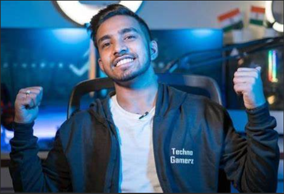
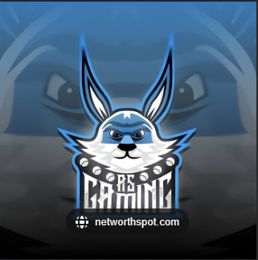
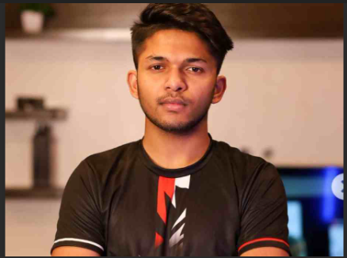
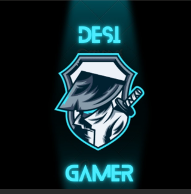
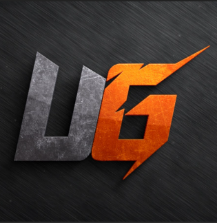

Greatest Gaming Youtubers
In India
1] Total Gaming (Ajjubhai)

Subscribers: 38.4 Million
Ajendra Vadiya, better known online as Total Gaming (also known as Ajju Bhai), is an Indian gaming YouTuber who live-streams the battle royale game Garena Free Fire to YouTube. He is most subscribed Indian gaming YouTuber.[1][2]. Has most fan folowing in current . Not only Number of Followers but also Number of haters is also in great quantity .He started playing Low-end Mobile Games Like Clash Of Clans in 2015.He move don Playing Garena Freefire in 2018 After he saw few friends playing it. As it was gaining popularity in that time . He did not have mobile phone that could support such Games so he started playing games on PC . After Mastering in game's Mechanics. he decided to begin his youtube journey as a content creator and created his channel on October 9, 2018
2] Techno Gamerz (Ujjwal Chaurasia)
Subscribers: 37.6 Million
Ujjwal Chaurasia, Known as Techno Gamerz. Also Called PVP Devil in Minecraft Community. He is most loved Gamer in community. You found very less haters of him over the India/World.He is most known for his GTA 5 Gameplay series. is one of India's biggest gaming YouTubers. He is most known for his GTA V series. Since the early stages of his life, he enjoyed playing video games. The first video game he played was "Snowbros".which he used to play at his brother's house. After some time he started playing GTA: Vice City and loved it, The reasoning being the player to do whatever they want in the game.
3] AS Gaming
Subscribers: 20.1 Million
Sahil Rana, better known online as A_S Gaming, is an Indian YouTuber who makes Garena Free Fire videos. He became popular in 2020 due to his factory challenges. He created his channel on October 26, 2016, and started uploading on January 21, 2019. His first video is about the 5 hidden places in the Bermuda map.In April 2020, he started to gain more than 100,000 subscribers in April, and then about 1 million subscribers in September 2020, mainly his Free Fire videos.
4] Lokesh Gamer
Subscribers: 15.6 Million
Lokesh Raj Singh, better known as Lokesh Gamer is an Indian YouTuber and E-sports Gamer. He is best known for his YouTube channel “Lokesh Gamer”, where he uploads the videos of Garena Free Fire, dubbed the most downloaded game, in 2020, in the world. Singh is usually seen collaborating with the likes of, A.S Gaming and Gyan Gaming over Garena Free Fire content. Singh is referred to by his fans as the ‘Diamond King’. Singh currently resides in Hyderabad, Telangana, India. He has achieved a lot of success at a young age as his main channel ‘Lokesh Gamer’, has over 15M subscribers and amassed over 1.5 billion views.
5] Gyan Gaming
Subscribers: 15 Million
Ankit Sujan, better known as Gyan Gaming, is a renowned Indian Free Fire content creator. Gyan Gaming has now become one of the top influencers in the Indian free-fire community. Gyan Mistri aka Gyan Gaming is a popular Indian Free Fire content creator. Gyan Gaming’s real name is Ankit Sujan, and his Free Fire I’d is 70393167. His in-game name is GyanSujan. Guild Name of Gyan Suzanne is -GyanGamingGG.Gyan Sujan played 16041 matches in squad mode and won 5898 games, which translates to a win rate of 36.76%. He has killed 53453 enemies and maintains an impressive K/D ratio of 5.27. Coming to Duo matches, he has 451 Booyahs and 5212 kills in 1994 games. The YouTuber maintains a win rate of 22.61% and an impressive K/D ratio of 3.38.
6] Desi Gamers
Subscribers: 14.4 Million
Amit Sharma, popularly known as Amit Bhai, is an Indian YouTuber from West Bengal who rose to fame because of his gaming style, Battle Royale gameplay, Free Fire videos, and live streams. After completing his graduation, Amit entered the world of gaming and gained a significant number of subscribers on his YouTube channels - Desi Gamers and Desi Army. Because of his hard work and his videos on Free Fire, Amit got two silver plays and one gold play button from YouTube. Amit loves to play Free Fire and other games as well and his favorite sport is football. Desi Gamers is also active on other social media platforms such as Instagram, Twitter, and Facebook. As per sources, the average view count on the videos by Amit is 30-40 million in a month.
7] Mythpat
Subscribers: 14.3 Million
Mythpat began his YouTube career by posting educational cameo videos featuring PUBG and GTA 5. He played GTA 5 with modifications [mods]. He pranked people on PUBG with comedic voices impersonating famous stars of India, with his most famous appearance as Hrithik Roshan. Later, he posted tips and tricks on the superhit game Granny, such as "How To Escape At 3AM" etc. A video named "Mythpat Channel Trailer" can be found on the channel, though it is not the actual channel trailer. The next thing up on his channel was PUBG Challenges, like "0% Sensitivity Challenge" and other challenges. On the first of April, 2019, he posted a video titled "I Am Hindustan Gamer" stating that he is the owner of the channel Hindustan Gamer. It turned out to be an April Fools joke.
8] Two side Gamers

Subscribers: 12.5 Million
TWO-SIDE GAMERS is a gaming channel operated by cousins Ritik Jain and Jash Dhoka. They live-stream the game Garena Free Fire daily. It is India's first duo gaming channel, and the only channel which live-streams Garena Free Fire.Ritik and Jash first started playing games when the game Bounce Ball was available on phones. They started their genuine career when the game Clash of Clans was released. They continued on Clash of Clans for the next three years. Slowly, when the game PUBG came to the trend, they tried it too. However, after the release of Garena Free Fire, the completely dedicated their channel to it; both of them garnered interest in it. They have many other Google accounts except TWO-SIDE GAMERS, all of which have abandoned YouTube channels and are no longer active.
9] CarryisLive
Subscribers: 12 Million
Ajey Nagar , better known as CarryMinati, is an Indian YouTuber, streamer channel CarryisLive is dedicated to gaming and live streams.[5] With over 40 million subscribers as of August 2023, he is the most-subscribed individual YouTuber in Asia.[6][7]Ajey Nagar was born on 12 June 1999 in Faridabad, a city near India's national capital New Delhi, He attended Delhi Public school, Faridabad till 2016, when he dropped out to pursue his YouTube career; skipping his Class-XII Board examination because of his nervousness about passing the economics exam.[9] He later completed his schooling through long-distance learning.Nagar began posting videos on YouTube at the age of 10, uploading football tutorial videos on his first YouTube channel STeaLThFeArzZ.[13][16] His main YouTube channel has been active since 2014.[11] In 2014, the channel's name was AddictedA1 and Nagar would upload recorded video game footage along with his reactions to the game.[17] In 2015, he changed the channel's name to CarryDeol, uploading gameplay footage of Counter-Strike: Global Offensive while mimicking Sunny Deol. The channel was subsequently renamed to CarryMinati.[18] He became the first Indian YouTuber ever to surpass the milestone of 30 million subscribers in May, 2021 and 40 million subscribers in August, 2023.[19][20] Beyond India, he also currently has the highest number of subscribers in the Asia region
10] Ujjwal (Ujjwal Chaurasia)
Subscribers: 10 Million
Ujjwal is the second channel of the Ujjwal Chaurasia (Techno Gamerz) Where he does gameplay Live streams and another mod videos. It has 10 millon+ Subscribers on this Youtube Channel .His Popular gameplays on this Channel are Minecraft mod videos, Herobrine Smp, Granny, etc and other live-streams, It is also One of the most popular gaming Youtube Channel In India